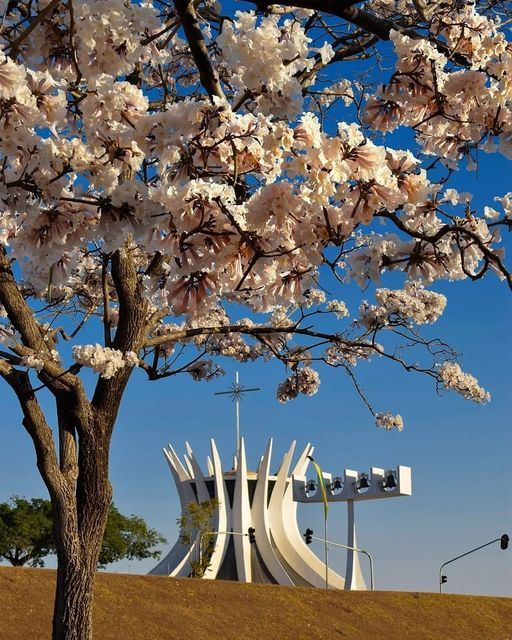
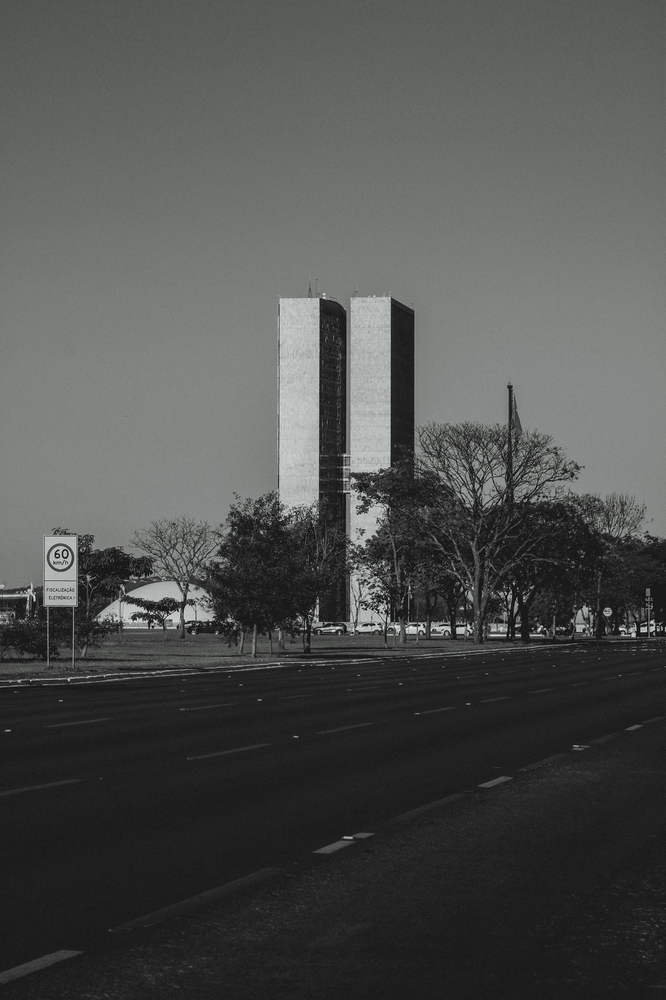
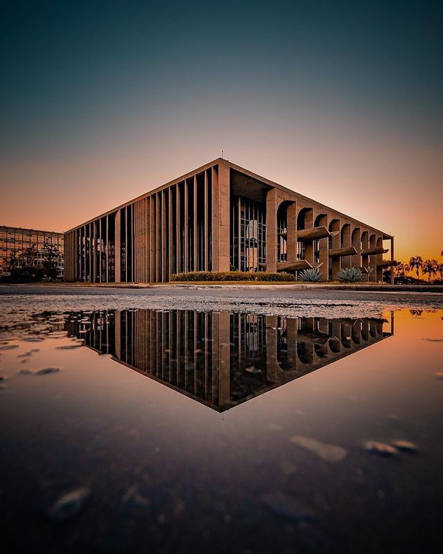
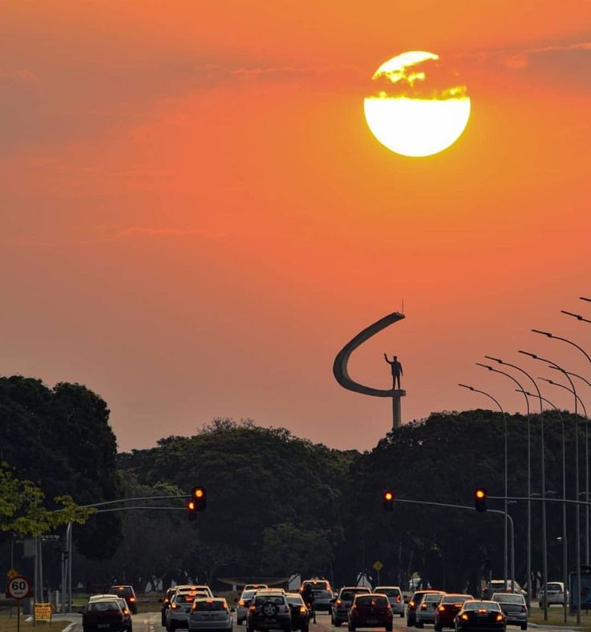

Olhares Sobre a Capital
A arquitetura de Brasília é famosa mundialmente por suas curvas livres e vãos livres impressionantes. O contraste do concreto branco com o céu intensamente azul cria o cenário perfeito para a fotografia.
Abaixo, reunimos uma galeria com imagens que capturam a essência monumental da cidade. Aproveite também para conferir nosso mini-documentário sobre o Eixo Monumental e relaxar com o áudio gravado no Parque da Cidade.




